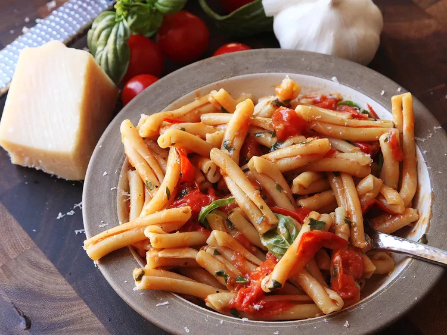

Blistered Cherry Tomato Pasta
Equipment:
- Large skillet/pan/wok
Ingredients:
- 450g dry pasta
- 4 cloves of garlic, thinly sliced
- 90ml Olive oil
- 675g (1 punnet) cherry tomatoes
- 30g fresh basil leaves, roughly chopped
- Salt
- Parmesan, to serve
Method:
- Place pasta in a large skillet or sauté pan and cover with water and a big pinch of salt. Bring to a boil over high heat, stirring occasionally. Boil until just shy of al dente, about 1 minute less than the package instructions recommend.
- Meanwhile, heat garlic and 4 tablespoons (60ml) olive oil in a 12-inch skillet over medium heat, stirring frequently, until garlic is softened but not browned, about 3 minutes. Add tomatoes and cook, stirring, until tomatoes begin to burst, about 10 minutes. You can help them along by pressing on them with the back of a wooden spoon as they soften.
- Continue to cook until sauce is rich and creamy, about 5 minutes longer. Stir in basil and season to taste with salt and pepper.
- When pasta is cooked, drain, reserving the pasta water. Add pasta to sauce and increase heat to medium-high. Cook, stirring and tossing constantly and adding reserved pasta water as necessary to adjust consistency to a nice, creamy flow. Remove from heat, stir in remaining 2 tablespoons (30ml) olive oil, and grate in a generous shower of Parmesan cheese. Serve immediately, passing extra Parmesan at the table.
